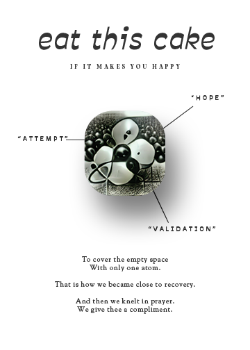
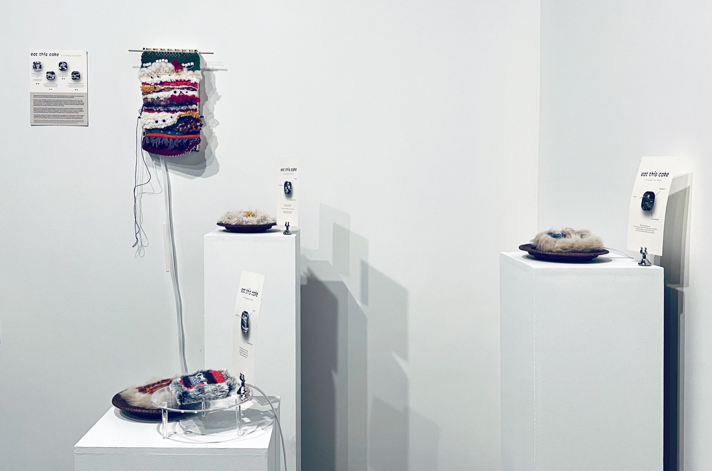

Eat This Cake If It Makes You Happy
Eat This Cake If It Makes You Happy explores food as a metaphor, as an emotional shelter, as a portal through which one may get away and get to many places.
Powered by an AI Model trained on hand-picked texts from food-obssesed writers, Eat This Cake If It Makes You Happy learns to associate human’s physical cravings with invisible hungers of all sorts; often, complex and conflicting desires, affiliations, and identities. When being asked repeatedly to “eat this cake”, the model starts to dream and drool on human’s behalf, murmuring short poems and fictions around cake eating, such as:
Eat this cake on every plate.
In the refrigerator
place a ruler like a house.
O soul.
I've added a space here
to indicate the shift.
Rao has been living with eating disorders for the past two decades. Therapists recommended that she try to self-soothe and self-distract instead resorting to food when in need of coping. While processing these AI generated metaphors, Rao selected and edited a dozen or so food fictions and turned them into textile squares through hours of soothing hand-weaving.
In Eat This Cake If It Makes You Happy there is no real cake, but placeholders, symbols and metaphors of cakes represented by obscure texts (generated by AI) and acts of coping (the hand-woven squares). In the installation, the viewer encounters a buffet of hand woven cake squares displayed together with individual menu cards. The cake squares are furry, have eyes, sit restlessly in their plates crying for attention, making growling noises. When a viewer tries to come closer to the cakes -- the cakes will stop moving and become quiet. When the viewer wanders away, the restless movement will resume, causing slight frustration and confusion.
Viewers may explore into these AI generated food metaphors by observing the individual woven cake squares, and/or touching Rao’s woven tapestry (hanging) with a spoon.
Viewers may want to write and submit their own food fictions to the AI training set at bit.ly/EatThisCake.
Training data set includes Margaret Atwood, Roland Barthes, Susan Burton, Lewis Carroll, Margaret Cavendish, Michelle J. Coghlan, Emily Dickinson, Louise Glück: Philip Gross, Nicole Gulotta, Leslie Haywood, John Milton, JoAnna Novak, Alexandra Haley Rigl, Gertrude Stein, Kate Taylor, Alice B. Toklas, Jessica Tyner, Harini Vembar, among others.
{kind=link}

{kind=link}
